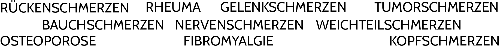

Behandlung von chronischen und akuten Schmerzen
Nach der Deutschen Schmerzgesellschaft e. V. leiden in Deutschland ca. 8 – 16 Mio Menschen an chronischen Schmerzen, die wiederum eine große Auswirkung auf die Arbeitsfähigkeit, das Privatleben und auf den psychischen Zustand des Patienten haben.
Neben der Schulmedizin und Psychotherapie ist die Physiotherapie die dritte Säule bei der Behandlung von chronischen und akuten Schmerzen.
Hier beginnt meine Arbeit.
Aufgrund meiner Erfahrung und Fortbildungen in verschieden, ganzheitlichen Therapieformen wähle ich mit Ihnen die für Sie passende Behandlung, um der Komplexität und Vielschichtigkeit Ihrer Schmerzerkrankung gerecht zu werden. Ziel der Therapie ist es, den Schmerz aus Ihrem Schmerzgedächtnis zu löschen.
Zurück